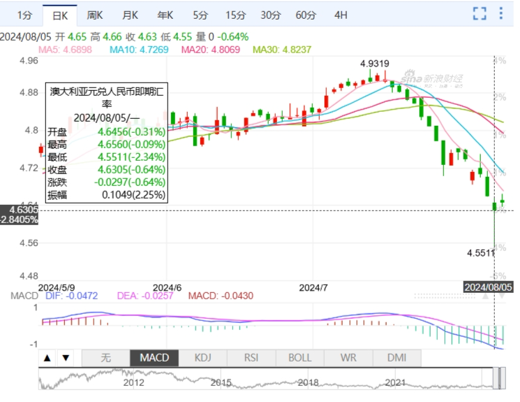
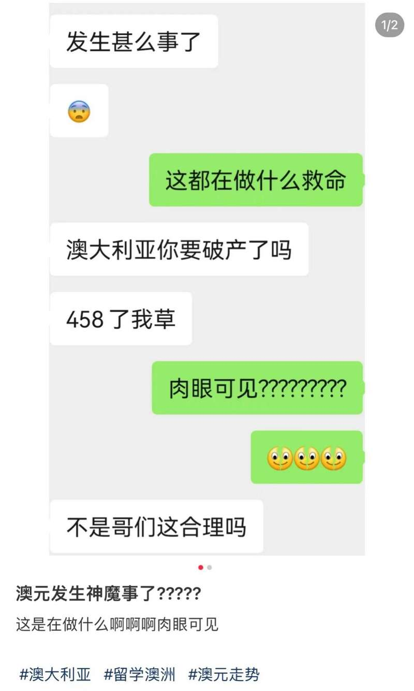
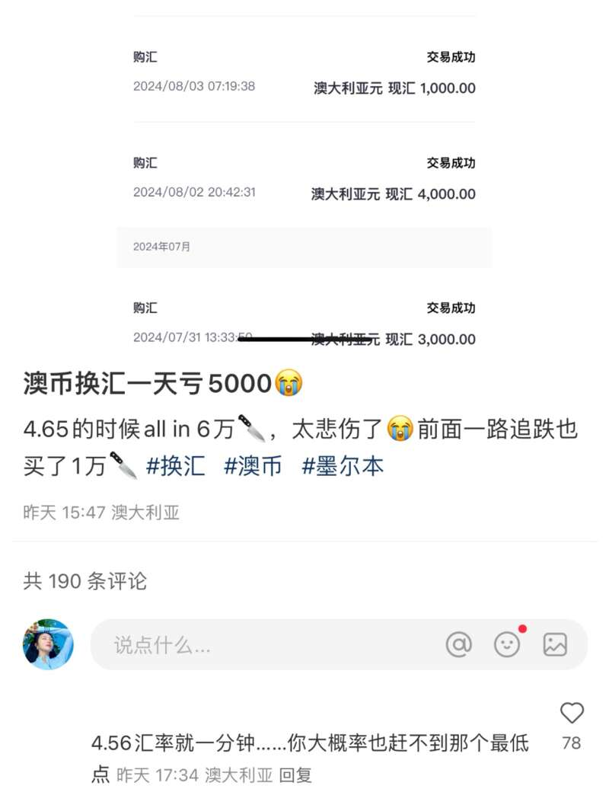
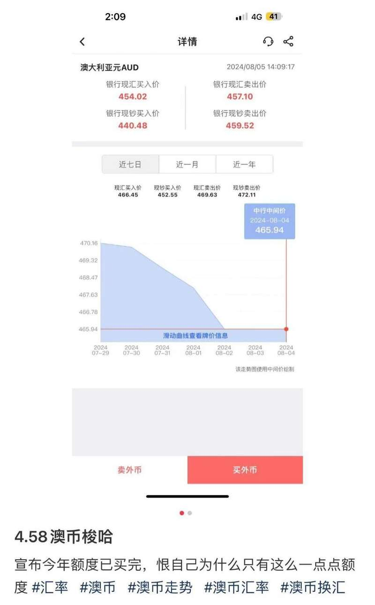
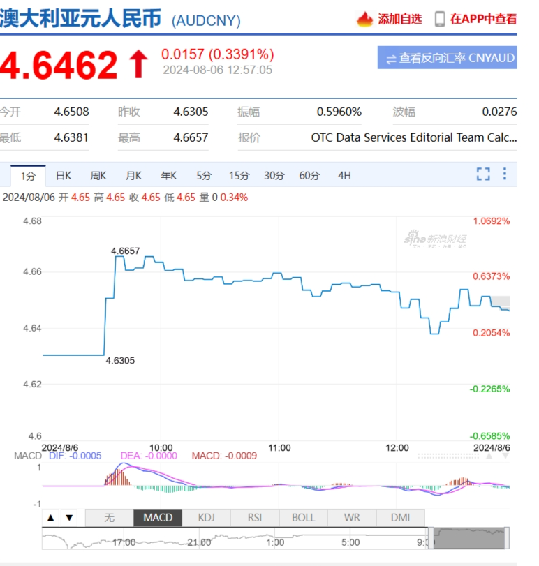
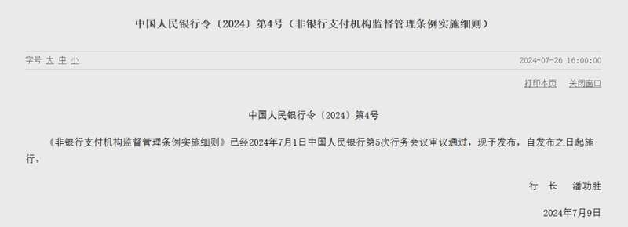
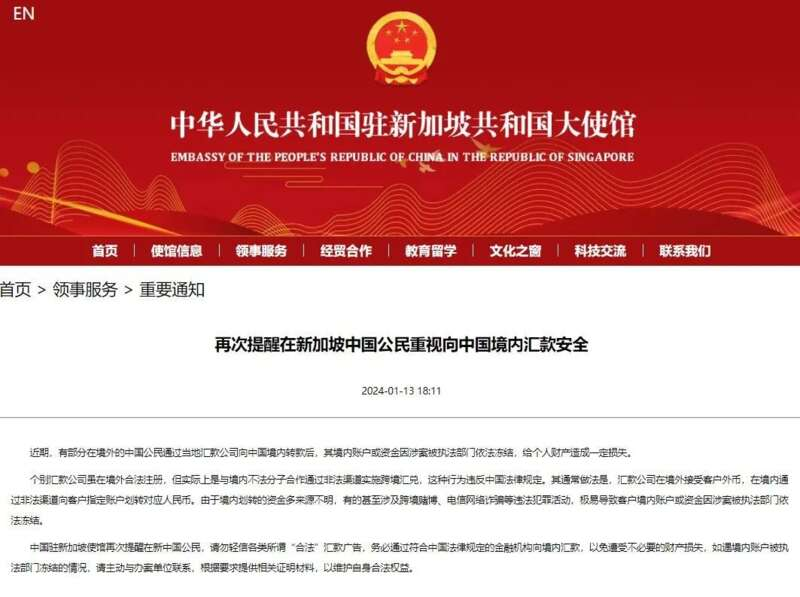

这两天忙着换汇的澳人注意！
最近外汇政策更新正在严查，
超过这个数都有被风险抽查的可能！
#01：
澳元暴跌汇率创新低
引发华人换汇热潮
昨天，澳币突然暴跌，最低点竟降至4.55！

图片来源：新浪财经
这个汇率让不少在澳的华人都惊呆了，毕竟上一次这么低的汇率，已经是去年年中的事儿了。这可是个千载难逢的换汇好机会！

图片来源：小红书@阿䳢
大家都赶紧忙着换汇，没想到当时的汇率甚至是一会儿一降，只差了一分钟，就错过了更好的汇率！

图片来源：小红书@薯条吃点好的
还有网友趁着低汇率，直接把换汇额度给用完了！

图片来源：小红书@请给肖肖八炸
不少评论区小伙伴都表示，自己在4.9的时候交了学费，可以说是错过了太多……
今天开盘，澳币兑人民币就开始小幅回升，目前在4.64左右，也还是不错的汇率。现在还想要换汇的小伙伴，还来得及！

图片来源：新浪财经
不过，有一件事情，目前已经换汇或者计划换汇的澳人注意了！
最近，一则公告发布：这类换汇将被严查！
#02：
微信和支付宝转账换汇被严查
超过一定数额将触发监管抽查
这次的换汇潮中，不少人选择微信或者支付宝换汇。
值得注意的是，
中国人民银行最新发布的重磅消息，
或许会对这类人产生重大影响！
继今年4月《非银行支付机构监督管理条例实施细则（征求意见稿）》发布三个月后，7月26日，中国人民银行宣布《非银行支付机构监督管理条例实施细则》自发布之日起施行，对包括微信、支付宝在内的众多支付平台进行了更严格的监管。
这一《细则》作为《非银行支付机构监督管理条例》的延伸，相当于提供了详细的“操作指南”，确保监管措施从即日起正式生效并落实到位。

图片来源：pbc.gov.cn
对于在澳的华人，尤其是经常使用移动支付进行跨境消费转账的人来说，影响无疑是重大的。
新规的核心变化主要可以总结为下面三点：
支付业务分类更细致：为了加强监管，支付业务被细分为储值账户营运和支付交易处理两大类，并进一步细分为Ⅰ类和Ⅱ类。
跨境转账监管力度加强：对单笔或累计超过一定金额的跨境转账，将进行重点检查。
风险抽查机制：非银行支付机构对大额转账将进行随机抽查，以防范洗钱、逃税等违法行为。
图片来源：kr-asia.com
对于澳洲的华人来说，下面这些变化必须注意：
1.非银行支付机构支付单笔转账3000元以上，会面临风险抽查，0-1万元的抽查率为2%，超过10万元会有高达10%的抽查率。
2. 非银行支付机构账户交易到达以下数额也会被重点检查：
单笔或累计现金交易超过5万元人民币；
公对公转账超过200万元人民币；
私人账户之间转账，如果是跨境交易超过20万元人民币，境内交易则超过50万元人民币。
无论您是给国内的父母汇款，还是给朋友转账，只要金额超过一定数额，都可能被抽查。转账金额越高，被抽查的概率就越大。
而且不仅是大额转账，频繁的小额多次转账也可能触发监管。尤其是通过非正规渠道进行换汇，风险大大增加，很可能会导致账户被冻结。
细则实施以后，通过微信支付、支付宝等非银行支付通道转移交易国内资金再也不是无人监管的“灰色地带”。如今监管办法透明，任何一笔交易，都有可能会被抽查！
#03：
合法交易正确换汇,
私人换汇也涉及违法
对于很多海外华人来说，不管是留学，工作还是生活，换汇都是家常便饭的一件事。
新规看起来对华人换汇造成了不便，实际上对于大多数人来说，是对大家的多一重保护，促使大家选择更加正规的换汇方式。
早在今年1月，驻新加坡大使馆发布了一则重要提醒，告诫海外华人：
通过非正规渠道
向国内汇款存在极高的风险，
可能导致账户被冻结。

图片来源：sg.china-embassy.gov.cn/
据新加坡媒体报道，2022年至2023年，收到超过670起华人因通过非正规渠道向国内汇款而导致账户被冻结的报案。
相关阅读：突发! 大批海外华人境内账户被冻结, 换汇遭警方调查! 损失超3000万, 直接惊动大使馆
图片来源：8 world
银行对银行卡的监管一直都较严格，所以很多华人换汇选择以微信或者支付宝的方式转入转出资金。也是因为这个原因，那些违规操作，一般也都会使用微信和支付宝。毕竟以往银行卡查得一直很严。
而新规的发布，这样操作的风险陡然增加。一旦涉及违规，一查一个准。境外换汇和支付都更加透明化了。
但是有人会问，有些比较大额，但是合法合规的交易，也会被查吗？
其实只有合规，不怕被查到。最重要的是准备好相关的证明材料。
如果你有一笔特别大的金额需要一次性处理，强烈建议你提前准备好相关的证明材料，如发票、合同等，以证明这笔交易的合法性和合理性。
这样，即使这笔交易被抽查，你也能迅速提供所需资料，避免不必要的麻烦和延误。
除此之外，“私人换汇”依旧是很多人的选择，一来图方便，二来汇率相对较实惠。但是这样做其实很容易被定义为“变相买卖外汇”。
当然有的人会说，自己的数额小，不到几百万不用被判刑。
但事实上，根据最高检和最高法负责人的讲话：非法进行外汇交易并获利超过10万人民币，将按照非法经营罪追究刑事责任。
变相买卖外汇是指在形式上进行的不是人民币和外汇之间的直接买卖，而采取以外汇偿还人民币或以人民币偿还外汇、以外汇和人民币互换实现货币价值转换的行为。
也就是说，如果你不经过银行正规渠道用1万人民币换等值澳币，然后通过支付宝、微信、银行卡转账的等办法将人民币汇入他人收款账户，他人直接给你等值澳币。
那么你们本质上就正在进行变相买卖外汇，如果违法所得数额达到10万乃至500万人民币，你们就要面临刑事犯罪处罚，一个不小心就面临牢狱之灾。
最后
作为生活在澳洲的华人，
我们应积极适应新形势，
遵守相关规定，
选择正规渠道进行换汇或转账，
来保障自身权益。